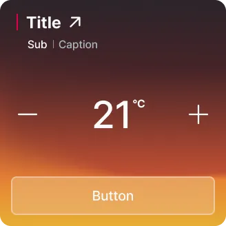
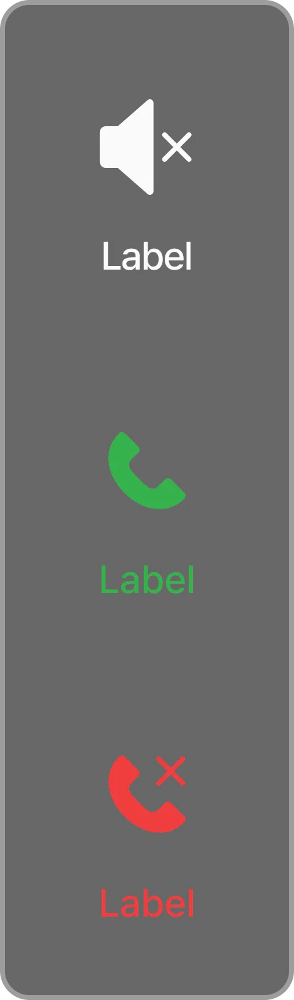
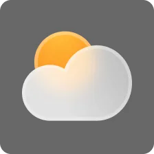
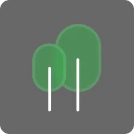
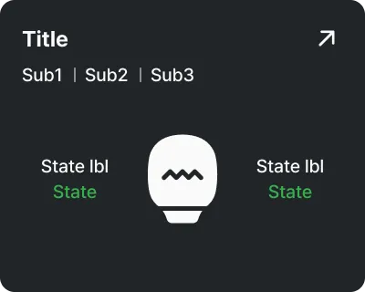
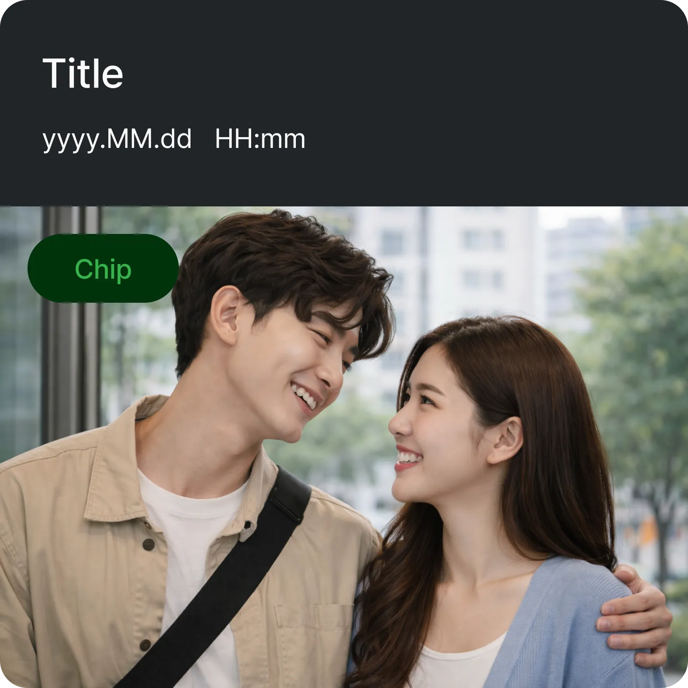
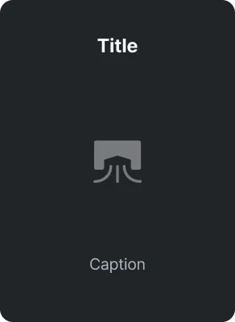
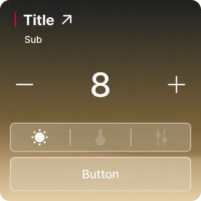
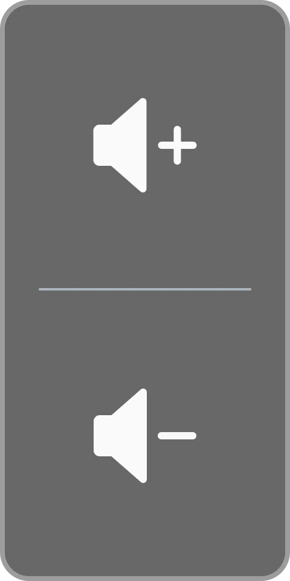
Triangle UI
A scalable, white-label UI system for
residential smart home wallpads.
The system serves any architecture client without a rebuild. A team of three designed it from the ground up and made every decision together.
One product.
Unlimited clients.
The wallpad is Hyundai HT's smart home interface, built in a 10" form factor. It ships as a fixed product to Hyundai Construction and as a white-label B2B product to architecture firms that build it into residential developments.
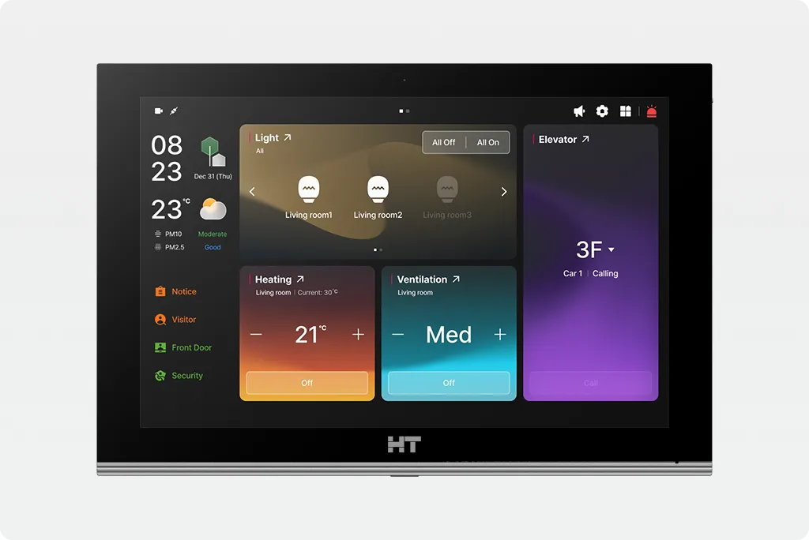
Every client arrives with different brand colors, feature sets, and CI guidelines. There's no fixed end state. The system has to be ready for clients we haven't met yet.
Simpler, Better.
Working within the design center's visual direction, our team of three built a shared design language from scratch and arrived at every decision together. My role was to translate it into the system: minimal tokens, minimal components, nothing that felt out of place on the hardware it lives on.

3-Layer System
Triangle-UI builds visual hierarchy with layered surfaces, each one a step lighter in tone. The top surface uses a glass-like effect, a functional choice since shadows don't read clearly on the smoked-glass display.

Categorized Colors
Category colors are part of the wallpad's design heritage: green for communication, blue for control, orange for information. We kept the hues for continuity and adjusted the values to pass the WCAG 3:1 requirement for UI components, reaching a 3.5:1 contrast against each background.
Iconography
Icons share one visual motif across the set: the roofline of a house. Usage drives the style, with solid icons for actions and line icons for information. All are built from basic geometric shapes to put recognition before expression.
One system,
Configurable by Tokens.
The token system runs in two layers. A new client's brand colors go into the primitive layer and flow through the semantic tokens automatically.
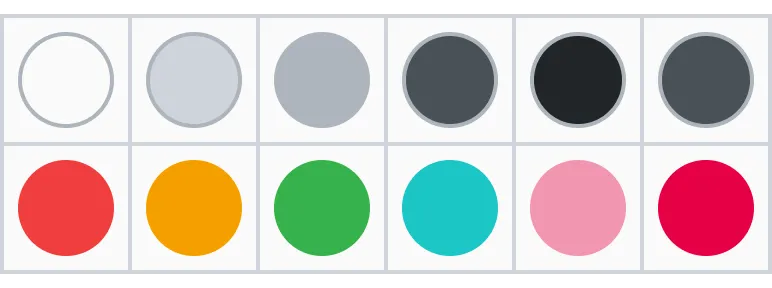
Color
A 60-step primitive palette covers neutrals and brand hues. Semantic tokens map intent: surface, brand, text, state, and overlay.
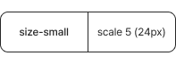
Typography
The scale runs from 12px to 80px with named semantic roles. Font family and weight are configurable per client at the semantic level.
Spacing
The grid uses a 4px base with 8 named steps. Resolution modes (10" vs 13") switch spacing values by context. Same token, different output.
Radius
Corner radius ranges from sharp to pill, and blur tokens cover overlay and panel surfaces. Both are configurable to each client's CI guidelines.
Most new client configurations are a token exercise.
Tokens cover color, typography, spacing, radius, and blur.
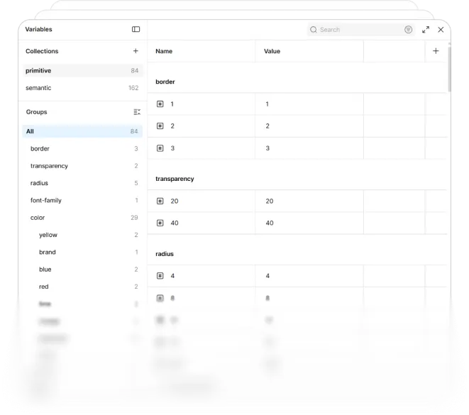
Built to be Reconfigured,
Not Rebuilt.
Every component is built from a master with every possible slot. Each instance shows only what its context needs and hides the rest through Figma's property system. All instances stay connected to one source, so a client configuration is composition, not reconstruction.
Every Change
Documented.
Every major update becomes a named branch. Client projects live separately, but each file carries a version reference, so it's always clear which Triangle-UI release it was built against.
All changes are documented in the version history page.
Widget-Based
Home Screen.
The main screen is built from freely customizable widgets. Control widgets use category colors; information widgets stay neutral, so users can tell them apart at a glance.
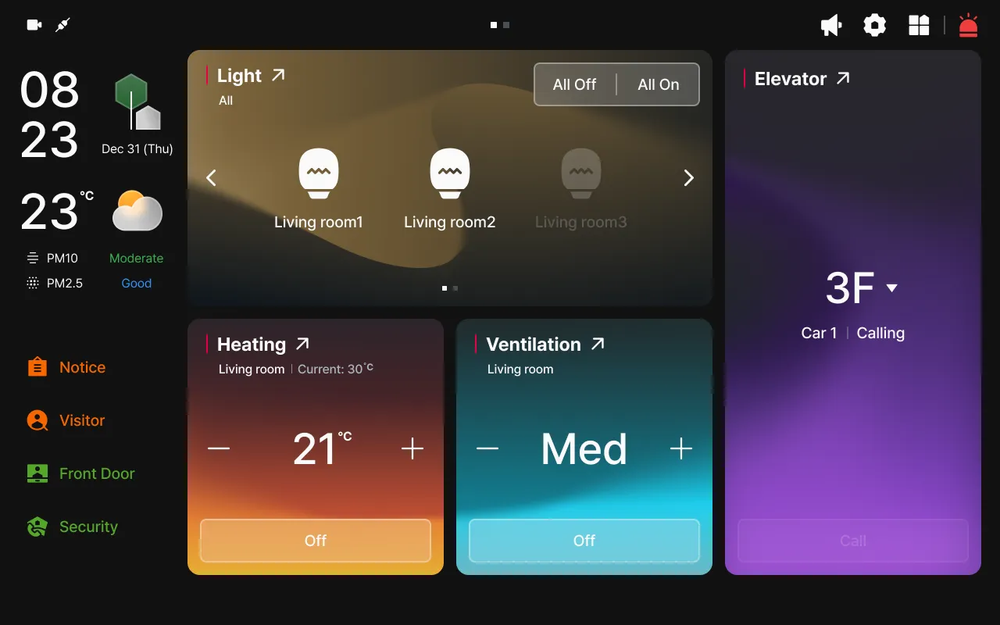
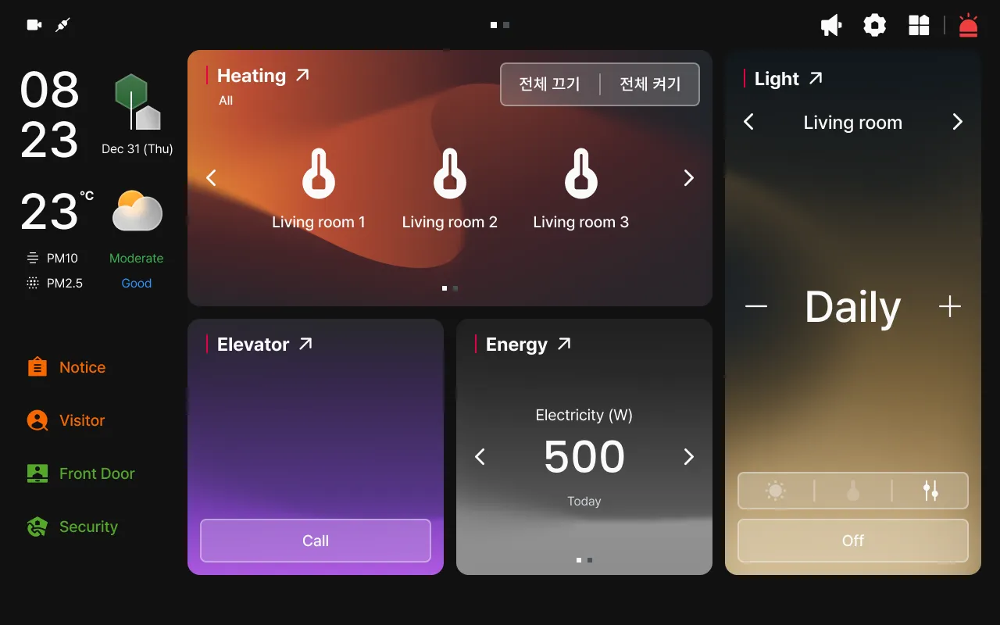
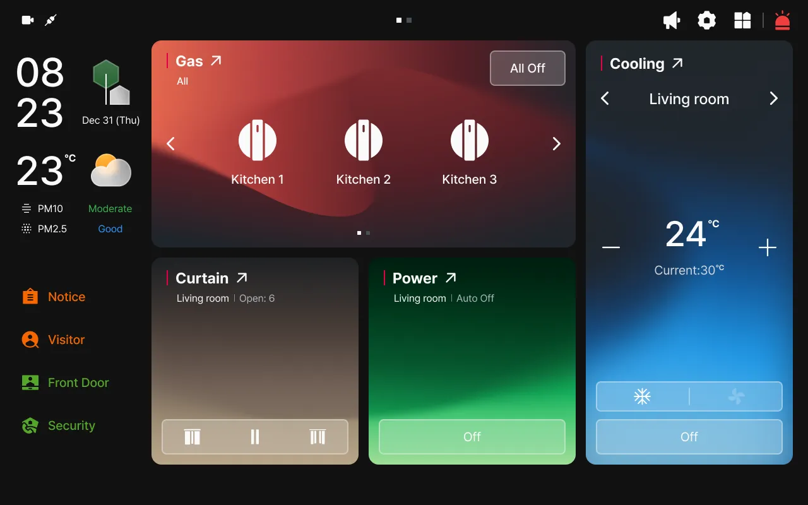
Adaptive Control
Tapping a widget expands it into a full control panel. Dimmed icons show off states; category colors light up when a device is on.
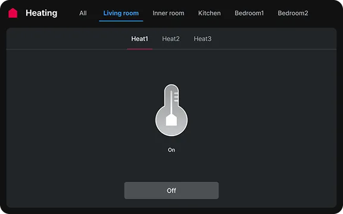
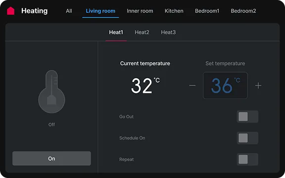
Immersive Calling
The call interface uses the full 10" display. Floating buttons keep the field of view open, while the 3-layer system surfaces high-priority actions without cluttering the frame.
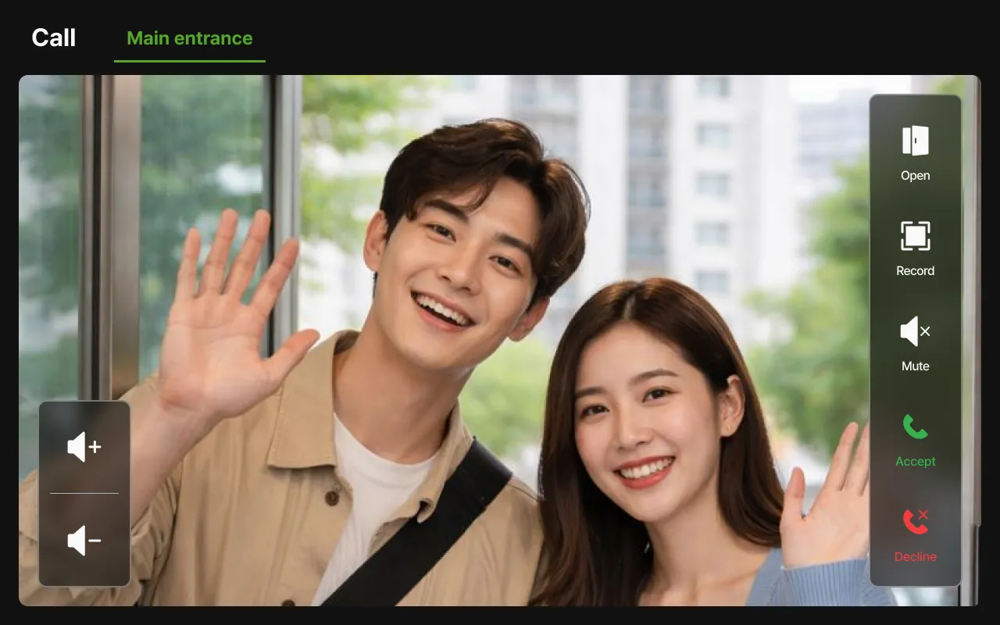
Clear Information
Orange highlights draw attention to critical info at a glance.
List-based components keep the experience consistent across the full interface.
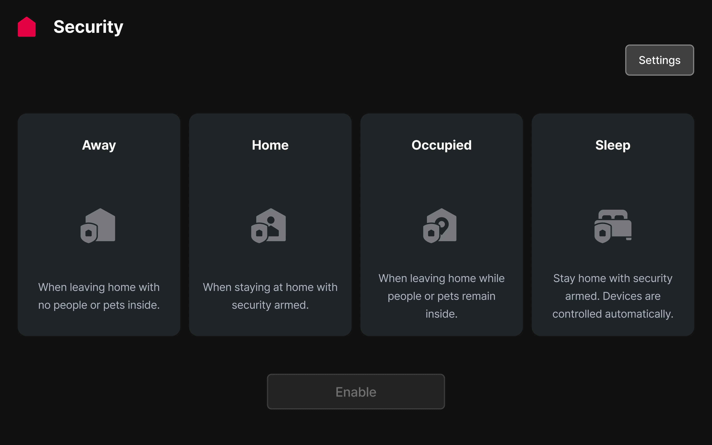
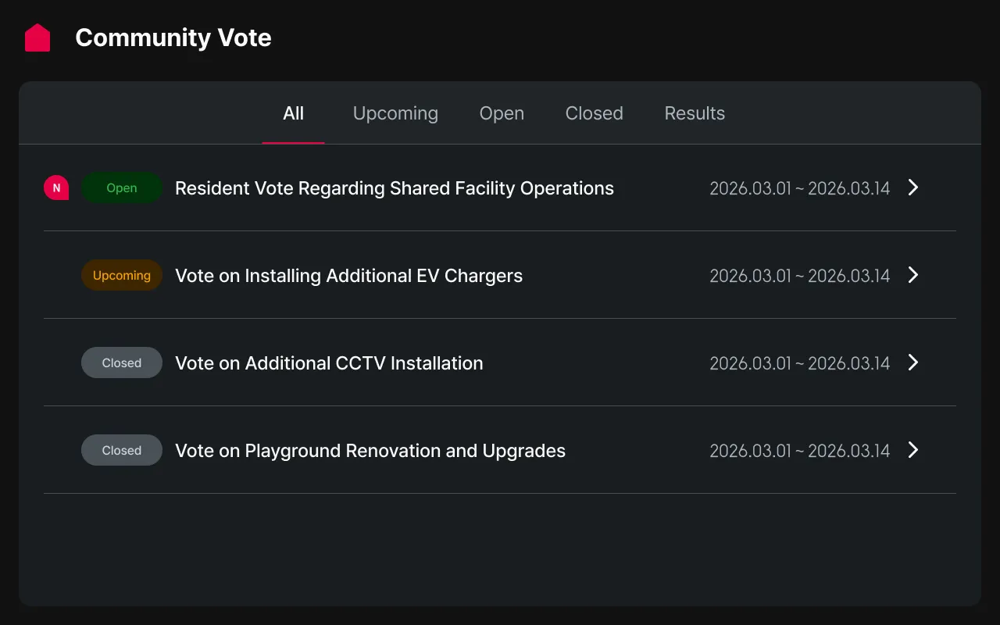
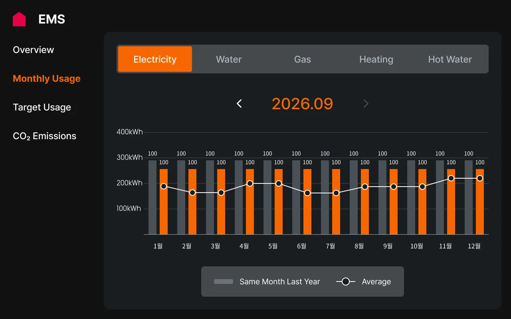
Translating a
Design Language.
We built the design system on the design center's design philosophy: consistency, intuitiveness, and scalability. Every structural decision, from token naming and component slots to branching rules, needed a rationale that fit those principles and that the whole team could stand behind. Nothing shipped until we agreed on why.
The sharpest tension was iconography: deciding to split the set into solid icons for actions and line icons for information. It was a small call with a large surface area. Once that rule was set, every icon that followed had to fit it.